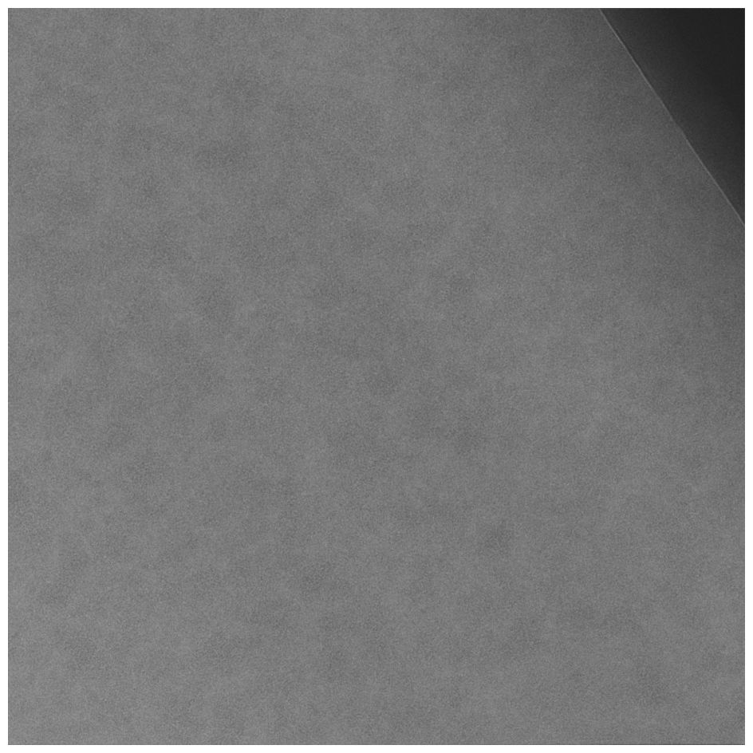
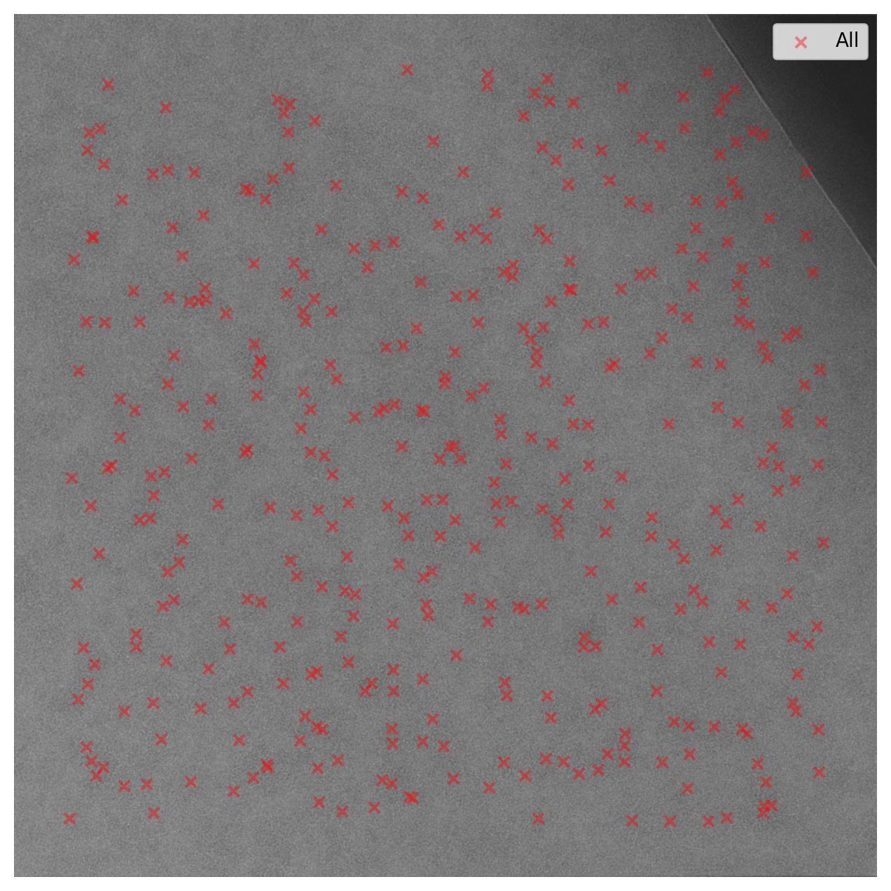

Introduction to 2DTM with Leopard-EM
This introductory tutorial goes through the basics of running the match_template and refine_template programs using a 60S large ribosomal subunit (LSU) template with a micrograph of a yeast lamella.
Here, we focus on understanding the basics of 2DTM which serves as the foundation for building more complex cryo-EM template matching workflows.
What's covered in this tutorial
In this tutorial we will cover:
- Simulate reference volume from PDB files - We download a prepared 60S LSU structure and demonstrate how to simulate realistic cryo-EM reference volumes. These steps are similar for any other PDB structure.
- Configure template matching runs - How to define orientation and defocus search parameters as well as running the
match_templateprogram. - Optimize 2DTM parameters (pixel size) - By using initial results, we can optimize parameters for later 2DTM searches to increase SNR and identify more particles.
- Running full 2DTM with Leopard-EM - Initial Particle locations and orientations are found using the
match_templateprogram. - Refining particle parameters post-search - Particle orientation and defocus values (initially identified with
match_template) are locally refined using therefine_templateprogram.
Code copy button (top-left)
This tutorial includes a lot of code snippets. There is a copy button in the top-left corner of each code block which will copy the entire code block to your clipboard.
Data and computation pre-requisites
Computational resources
The match_template program requires a GPU for accelerated computation, and Leopard-EM only supports Linux operating systems.
This tutorial also assumes you have Leopard-EM installed on your system.
Please refer to the installation instructions for more further details, but Leopard-EM should be installable via:
pip install leopard-em
Data
Data used in this tutorial are hosted in this Zenodo record. Download the following files into some project directory on your machine:
60S_aligned.pdb- LSU structure processed from PDB 6Q8Y.xenon_131_000_0.0_DWS.mrc- Full micrograph (4k by 4k) to search overxenon_131_000_0.0_DWS_cropped_4.mrc- Cropped portion of micrograph (1k by 1k) to run optimizations on.
This can be accomplished via the following command
zenodo_get https://zenodo.org/records/16423583 --glob 60S_aligned.pdb --glob xenon_131_000_0.0_DWS.mrc --glob xenon_131_000_0.0_DWS_cropped_4.mrc
Your project directory should now look like this:
leopardEM_intro/
├── 60S_aligned.pdb
├── xenon_131_000_0.0_DWS_cropped_4.mrc
└── xenon_131_000_0.0_DWS.mrc
Inspecting the micrograph
The micrograph of yeast cytoplasm contains ribosomes in various orientations and has typical features of cryo-EM data. Notably, the edge of the lamella is visible in the top right corner of the micrograph which we will revisit later in this tutorial to make sure this artifact does not cause spurious detections.

Step 1: Reference template simulation
Our objective is to generate a realistic 3D cyro-EM density map from the provided LSU PDB structure. This volume is needed for the 2D template match process.
Template simulation process
We will use the TeamTomo package ttsim3d to simulate realistic cryo-EM conditions including:
- Electron dose weighting - accounts for radiation damage during exposure
- Modulation Transfer Function (MTF) - simulates detector response characteristics
- B-factor scaling - accounts for structural flexibility and motion blur
This simulation transforms our atomic PDB model into a realistic density map that matches what we expect to see in actual cryo-EM data.
Python script for template simulation
Create a new Python script simulate_template.py in your project directory with the following contents:
from ttsim3d.models import Simulator, SimulatorConfig
# Instantiate the configuration object
sim_conf = SimulatorConfig(
voltage=300.0, # in keV
apply_dose_weighting=True,
dose_start=0.0, # in e-/A^2
dose_end=50.0, # in e-/A^2
dose_filter_modify_signal="rel_diff",
upsampling=-1, # auto
mtf_reference="falcon4EC_300kv",
)
# Instantiate the simulator
sim = Simulator(
pdb_filepath="60S_aligned.pdb",
pixel_spacing=0.95, # Angstroms
volume_shape=(512, 512, 512),
center_atoms=True,
remove_hydrogens=True,
b_factor_scaling=0.5,
additional_b_factor=0,
simulator_config=sim_conf,
)
# Run the simulation and save to disk
mrc_filepath = "60S_map_px0.95_bscale0.5_intro.mrc"
sim.export_to_mrc(mrc_filepath)
Then, run the Python script:
python simulate_template.py
A new file should appear in your project directory.
leopardEM_intro/
├── 60S_aligned.pdb
├── 60S_map_px0.95_bscale0.5_intro.mrc <-- New
├── simulate_template.py
├── xenon_131_000_0.0_DWS_cropped_4.mrc
└── xenon_131_000_0.0_DWS.mrc
Step 2: Initial template matching process
During the initial template matching process, we begin by performing a test run on a smaller region of the image rather than the entire micrograph. This approach helps us validate that our program is functioning as expected and the high-confidence peaks identified in this initial search can be used for further optimization, such as pixel size, before processing many micrographs.
Cropping the micrograph to its central region and reducing its size by a factor of four in each dimension (4,096 --> 1,024 pixels) makes this initial search much faster thus making the optimization and debugging steps much faster.
(Optional) Crop the micrograph to smaller size
The cropped micrograph xenon_131_000_0.0_DWS_cropped_4.mrc should already be downloaded in your project directory, but for completeness, here is a Python script that performs the cropping:
Micrograph cropping script
import mrcfile
import numpy as np
# Crop center of micrograph by division factor
INPUT_FILE = "xenon_131_000_0.0_DWS.mrc"
DIVISION_FACTOR = 4
if __name__ == "__main__":
with mrcfile.open(INPUT_FILE, permissive=True) as mrc:
data = mrc.data[0] if len(mrc.data.shape) > 2 else mrc.data
# Crop square in center of image
h, w = data.shape
new_h, new_w = h // DIVISION_FACTOR, w // DIVISION_FACTOR
start_h, start_w = h // 2 - new_h // 2, w // 2 - new_w // 2
cropped = data[start_h:start_h + new_h, start_w:start_w + new_w]
# Save cropped image
output_file = INPUT_FILE.replace(".mrc", f"_cropped_{DIVISION_FACTOR}.mrc")
with mrcfile.new(output_file, overwrite=True) as mrc_new:
mrc_new.set_data(cropped.astype(np.float32))
print(f"Cropped {data.shape} to {cropped.shape} -> {output_file}")
Configure the template matching run
Now we'll set up template matching run on the cropped image. We use a YAML configuration file to organize all the parameters in a clean, readable format rather than specifying them directly in Python code or passing them as command line arguments. Some benefits of using configuration files over large numbers of command line arguments are:
- Reproducibility - exact parameters are saved and can be shared
- Clarity - all settings are visible and easy to modify
- Organization - complex parameter sets are well-structured
Example YAML configurations for all programs can be found under the programs/ directory on the GitHub page, and detailed documentation for each program is available on the Program Documentation Overview page.
The template matching configuration for this tutorial is shown below; copy its contents into a new file match_template_config_crop_intro.yaml.
CTF estimations for match template
Defocus estimations per micrograph are necessary for running 2DTM, and we have previously run CTFFIND5 to obtain the optics_group.astigmatism_angle, optics_group.defocus_u, and optics_group.defocus_v parameters.
Using a different micrograph with this tutorial will require you to replace these values (along with any other optics changes) in the configuration file.
micrograph_path: xenon_131_000_0.0_DWS_cropped_4.mrc
template_volume_path: 60S_map_px0.95_bscale0.5_intro.mrc
computational_config:
gpu_ids: "all" # Use all available GPUs
num_cpus: 4 # 4 CPUs per GPU
defocus_search_config:
enabled: true
defocus_max: 1200.0
defocus_min: -1200.0
defocus_step: 200.0
match_template_result:
allow_file_overwrite: true
correlation_average_path: cropped_correlation_average_intro.mrc
correlation_variance_path: cropped_correlation_variance_intro.mrc
mip_path: cropped_mip_intro.mrc
orientation_phi_path: cropped_orientation_phi_intro.mrc
orientation_psi_path: cropped_orientation_psi_intro.mrc
orientation_theta_path: cropped_orientation_theta_intro.mrc
relative_defocus_path: cropped_relative_defocus_intro.mrc
scaled_mip_path: cropped_scaled_mip_intro.mrc
optics_group:
label: micrograph_1
amplitude_contrast_ratio: 0.07
ctf_B_factor: 0.0
astigmatism_angle: 39.417260
defocus_u: 5978.758301
defocus_v: 5617.462402
phase_shift: 0.0
pixel_size: 0.95
spherical_aberration: 2.7
voltage: 300.0
orientation_search_config:
base_grid_method: uniform
psi_step: 1.5 # in degrees
theta_step: 2.5 # in degrees
preprocessing_filters:
whitening_filter:
enabled: true
do_power_spectrum: true
max_freq: 1.0
In terms of configuration, that's it!
We can move onto running the match_template program.
Running template matching
Now, we move onto executing the template matching program based on the blueprint run_match_template.py script.
Create a new file run_match_template.py in your project directory with the following contents:
from leopard_em.pydantic_models.managers import MatchTemplateManager
YAML_CONFIG_PATH = "match_template_config_crop_intro.yaml"
ORIENTATION_BATCH_SIZE = 8 # larger values may run faster
def main():
"""Main function to run the match template program."""
mt_manager = MatchTemplateManager.from_yaml(YAML_CONFIG_PATH)
mt_manager.run_match_template(ORIENTATION_BATCH_SIZE)
df = mt_manager.results_to_dataframe(locate_peaks_kwargs={"false_positives": 1.0})
df.to_csv("results_match_template_crop_intro.csv")
# NOTE: invoking from `if __name__ == "__main__"` is necessary
# for proper multiprocessing/GPU-distribution behavior
if __name__ == "__main__":
main()
Now, run the script:
python run_match_template.py
After the program completes, a new CSV file along with several output MRC files should appear in the results/ directory.
Looking at the results CSV file, we've found 14 peaks above the statistical threshold.
While this is a modest number for the cropped region, these high-confidence detections provide valuable data for optimizing our template parameters.
leopardEM_intro/
├── 60S_aligned.pdb
├── 60S_map_px0.95_bscale0.5_intro.mrc
├── cropped_correlation_average_intro.mrc <-- New
├── cropped_correlation_variance_intro.mrc <-- New
├── cropped_mip_intro.mrc <-- New
├── cropped_orientation_phi_intro.mrc <-- New
├── cropped_orientation_psi_intro.mrc <-- New
├── cropped_orientation_theta_intro.mrc <-- New
├── cropped_relative_defocus_intro.mrc <-- New
├── cropped_scaled_mip_intro.mrc <-- New
├── match_template_config_crop_intro.yaml
├── results_match_template_crop_intro.csv <-- New
├── run_match_template.py
├── simulate_template.py
├── xenon_131_000_0.0_DWS.mrc
└── xenon_131_000_0.0_DWS_cropped_4.mrc
Step 3: Template optimization
Using the initial template matching results, we optimize critical parameters to improve 2DTM detections and sensitivity.
Even small errors in parameters can significantly reduce 2DTM sensitivity.
The most critical parameter to optimize is the pixel size used for template simulation, and the optimize_template program iteratively refines the pixel size.
Template optimization good practices
The common sources of pixel size errors are:
- PDB models built with incorrect pixel size calibration (±1-3% for cryo-EM maps)
- Inaccurate microscope magnification calibration
Even small misalignments in the relative pixel size between the micrograph and model structure used for 2DTM can cause ~10-20% decrease in sensitivity. We highly recommend re-running this pixel size optimization procedure for each new combination of template structure and dataset. Who knows, you may find more peaks with higher confidences!
Optimize template configuration
Let's create the optimization configuration (create optimize_template_config_intro.yaml in your project directory).
particle_stack:
df_path: results_match_template_crop_intro.csv
extracted_box_size: [528, 528]
original_template_size: [512, 512]
pixel_size_coarse_search:
enabled: true
pixel_size_min: -0.05
pixel_size_max: 0.05
pixel_size_step: 0.01
pixel_size_fine_search:
enabled: true
pixel_size_min: -0.008
pixel_size_max: 0.008
pixel_size_step: 0.001
preprocessing_filters:
whitening_filter:
do_power_spectrum: true
enabled: true
max_freq: 1.0
num_freq_bins: null
computational_config:
gpu_ids: 0
num_cpus: 2
simulator:
simulator_config:
voltage: 300.0
apply_dose_weighting: true
dose_start: 0.0
dose_end: 50.0
dose_filter_modify_signal: "rel_diff"
upsampling: -1
mtf_reference: "falcon4EC_300kv"
pdb_filepath: "60S_aligned.pdb"
volume_shape: [512, 512, 512]
b_factor_scaling: 0.5
additional_b_factor: 0
pixel_spacing: 0.95
center_atoms: true
remove_hydrogens: true
Running the optimize template program
The optimize_template program is executed in much the same way as the match_template program.
Create a new Python script run_optimize_template.py with the following contents
from leopard_em.pydantic_models.managers import OptimizeTemplateManager
OPTIMIZE_YAML_PATH = "optimize_template_config_intro.yaml"
def main() -> None:
"""Main function to run the optimize template program."""
otm = OptimizeTemplateManager.from_yaml(OPTIMIZE_YAML_PATH)
otm.run_optimize_template(
output_text_path="optimize_template_results_intro.txt"
)
if __name__ == "__main__":
main()
Then again run the script.
python run_optimize_template.py
Optimization results
Inspecting the new results file optimize_template_results_intro.txt we see the pixel size optimization determined that 0.936 Å/pixel provides the best match to our experimental data (results may vary by ±0.002 Å).
This represents a ~1.5% correction from our initial estimate of 0.95 Å/pixel - a small but important improvement.
Re-generating Optimized Templates
Now we'll regenerate our 60S template using the optimized pixel size. This updated template should provide better correlation scores and more reliable particle detection in the full template matching run.
Create a new file simulate_optimized_template.py and run it like before.
# Re-simulate 60S map with optimized pixel size
from ttsim3d.models import Simulator, SimulatorConfig
# Instantiate the configuration object
sim_conf = SimulatorConfig(
voltage=300.0, # in keV
apply_dose_weighting=True,
dose_start=0.0, # in e-/A^2
dose_end=50.0, # in e-/A^2
dose_filter_modify_signal="rel_diff",
upsampling=-1, # auto
mtf_reference="falcon4EC_300kv",
)
# Instantiate the simulator for 60S
sim = Simulator(
pdb_filepath="60S_aligned.pdb",
pixel_spacing=0.936, # Optimized (Angstroms)
volume_shape=(512, 512, 512),
center_atoms=False,
remove_hydrogens=True,
b_factor_scaling=0.5,
additional_b_factor=0,
simulator_config=sim_conf,
)
# Run the simulation
mrc_filepath = "60S_map_px0.936_bscale0.5_intro.mrc"
sim.export_to_mrc(mrc_filepath)
We will now use the new 60S_map_px0.936_bscale0.5_intro.mrc template in the full template matching process.
Step 4: Full template matching run
With our optimized 60S template in hand, we're ready to move on to running template matching on the entire micrograph to locate and orient 60S ribosomes within our image. The full search is computationally intensive taking ~8 hours on an RTX A6000 ada GPU and parallelizes across multi-GPU systems.
Full match template configuration
The full match template configuration is is nearly identical to the previous cropped configuration, but this time we point it towards the full 4k by 4k micrograph.
Create a new file match_template_config_60S_intro.yaml with the following contents.
micrograph_path: xenon_131_000_0.0_DWS.mrc
template_volume_path: 60S_map_px0.936_bscale0.5_intro.mrc
computational_config:
gpu_ids: "all" # Use all available GPUs
num_cpus: 4 # 4 CPUs per GPU
defocus_search_config:
enabled: true
defocus_max: 1200.0
defocus_min: -1200.0
defocus_step: 200.0
match_template_result:
allow_file_overwrite: true
correlation_average_path: output_correlation_average_intro.mrc
correlation_variance_path: output_correlation_variance_intro.mrc
mip_path: output_mip_intro.mrc
orientation_phi_path: output_orientation_phi_intro.mrc
orientation_psi_path: output_orientation_psi_intro.mrc
orientation_theta_path: output_orientation_theta_intro.mrc
relative_defocus_path: output_relative_defocus_intro.mrc
scaled_mip_path: output_scaled_mip_intro.mrc
optics_group:
label: micrograph_1
amplitude_contrast_ratio: 0.07
ctf_B_factor: 0.0
astigmatism_angle: 39.417260
defocus_u: 5978.758301
defocus_v: 5617.462402
phase_shift: 0.0
pixel_size: 0.936 # Optimized pixel size
spherical_aberration: 2.7
voltage: 300.0
orientation_search_config:
base_grid_method: uniform
psi_step: 1.5 # in degrees
theta_step: 2.5 # in degrees
preprocessing_filters:
whitening_filter:
enabled: true
do_power_spectrum: true
max_freq: 1.0
Running the search
We will use the same run_match_template.py file, but we need to update which YAML configuration file the script reads and the output CSV file.
Change the following lines in the script
YAML_CONFIG_PATH = "match_template_config_60S_intro.yaml" # line 3
...
df.to_csv("results/results_match_template_60S_intro.csv") # line 12
and run the Python script again
python run_match_template.py
Encountering CUDA Out of Memory Error
On GPUs with lower amounts of VRAM, you may encounter an out-of-memory error.
Decrease the batch size to a lower value (e.g., ORIENTATION_BATCH_SIZE = 4) and try re-running the script.
Results
Excellent! Once the template matching process finishes, there should be the following new files in the project directory.
leopardEM_intro/
60S_aligned.pdb
...
output_correlation_average_intro.mrc <-- New
output_correlation_variance_intro.mrc <-- New
output_mip_intro.mrc <-- New
output_orientation_phi_intro.mrc <-- New
output_orientation_psi_intro.mrc <-- New
output_orientation_theta_intro.mrc <-- New
output_relative_defocus_intro.mrc <-- New
output_scaled_mip_intro.mrc <-- New
results_match_template_60S_intro.csv <-- New
results_match_template_crop_intro.csv
run_match_template.py
...
xenon_131_000_0.0_DWS.mrc
Their exact contents and visualizing the results are discussed elsewhere in the documentation, and what we're most interested in is the results_match_template_60S_intro.csv file which contains all the information about our 407 identified peaks above the statistical threshold.
Step 5: Data inspection step
Re-referencing the micrograph, we can clearly see the dark lamella edge is visible in the top-right corner. It is good practice to make sure artifacts in your micrographs are not causing spurious detections and apply a filtering strategy if necessary. In this case, we don't see any ribosome detections within the dark region or along its boundary.

Since we are confident in our detections, we can move onto the template refinement process.
Python script for generating above plot images
The following is a very simple plotting script using matplotlib to visualize the distribution of particles. Note, you may need to install matplotlib via pip install matplotlib before running the script.
import mrcfile
import numpy as np
import pandas as pd
import matplotlib.pyplot as plt
# Load data
img = mrcfile.read("xenon_131_000_0.0_DWS.mrc")
df = pd.read_csv("results_match_template_60S_intro.csv")
# Plot 1: Only unfiltered data
plt.figure(figsize=(8, 8))
plt.imshow(img, cmap="gray")
plt.scatter(
df["pos_x_img"], df["pos_y_img"], c="red", s=30, label="All", alpha=0.4, marker="x"
)
plt.axis("off")
plt.legend()
plt.savefig("match_template_intro_all_locations.png", dpi=200, bbox_inches="tight")
plt.close()
print("Plots saved successfully!")
Step 6: Template refinement
Our objective now is to improve the accuracy of particle location and orientation estimates through local refinement.
This is accomplished using the refine_template program which performs a local search around the initial estimates from match_template.
Key difference between match_template and refine_template are:
match_templateperforms a global search over the entire micrograph and orientation space which is computationally expensive.refine_templateperforms a local search around known particles with finer angular and defocus sampling. Local searches are much faster.
Refinement configuration
At its most basic, the refinement configuration tells the program where particles are located in the micrograph, how to extract their particle images, and what orientation and defocus values to sample locally. Our original template volume produces projections of 512 by 512 pixels, so we'll set the extracted box size to 518 by 518 pixels to provide some small margin of movement during refinement. Generally, the extracted box size should be 4-24 pixels larger than the template projection size.
Create a new file refine_template_config_60S_intro.yaml with the following contents.
template_volume_path: 60S_map_px0.936_bscale0.5_intro.mrc
particle_stack:
df_path: results_match_template_60S_intro.csv
extracted_box_size: [518, 518]
original_template_size: [512, 512]
defocus_refinement_config:
enabled: true
defocus_max: 100.0 # in Angstroms, relative to "best" particle defocus value
defocus_min: -100.0 # in Angstroms, relative to "best" particle defocus value
defocus_step: 20.0 # in Angstroms
orientation_refinement_config:
enabled: true
psi_step_coarse: 1.5 # in degrees
psi_step_fine: 0.1 # in degrees
theta_step_coarse: 2.5 # in degrees
theta_step_fine: 0.1 # in degrees
pixel_size_refinement_config:
enabled: false
preprocessing_filters:
whitening_filter:
do_power_spectrum: true
enabled: true
max_freq: 1.0
num_freq_bins: null
computational_config:
gpu_ids: "all"
num_cpus: 1 # 1 CPU per GPU
Running the refinement
The refinement program is executed in a similar manner to the previous programs.
Again, we use the included blueprint script run_refine_template.py from the GitHub repository.
Create a new Python script run_refine_template.py with the following contents:
from leopard_em.pydantic_models.managers import RefineTemplateManager
YAML_CONFIG_PATH = "refine_template_config_60S_intro.yaml"
DATAFRAME_OUTPUT_PATH = "results_refine_template_60S_intro.csv"
PARTICLE_BATCH_SIZE = 64 # Tune this values based on GPU memory
def main() -> None:
rt_manager = RefineTemplateManager.from_yaml(YAML_CONFIG_PATH)
rt_manager.run_refine_template(DATAFRAME_OUTPUT_PATH, PARTICLE_BATCH_SIZE)
if __name__ == "__main__":
main()
Then run the script:
python run_refine_template.py
Refinement results
We now have a set of particle locations and orientations with improved orientation and defocus estimates along with improved z-scores.
These results are saved in an updated CSV file results_refine_template_60S_intro.csv.
The introductory tutorial is now complete, and you should now have solid understanding of the standard 2DTM workflow using Leopard-EM. Feel free to explore other parts of the documentation to learn more about how you can use these refined results to visualize particles, such as with Visualizing 2DTM Results, or the exact data formats which Leopard-EM uses.
Tutorial summary
Throughout this tutorial, we've covered the essential steps in the "standard 2DTM workflow" by identifying 60S ribosomes using Leopard-EM. You've learned how to
- Simulate reference volumes from PDB structures using
ttsim3d. - Configure and run 2DTM searches with the
match_templateprogram in Leopard-EM. - (once per dataset) Optimize the pixel size using the
optimize_templateprogram. - Perform a full 2DTM search on a micrograph to identify particle locations and orientations.
- Inspect results on top of the micrograph to ensure they make contextual sense (no spurious detections).
- Refine particle parameters using the
refine_templateprogram for improved accuracy.